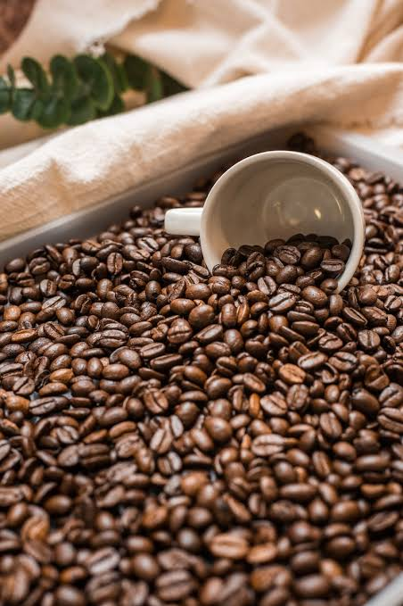

Kopi Nusantara didirikan dengan semangat untuk memperkenalkan kekayaan kopi Indonesia kepada dunia. Kami bekerja langsung dengan petani kopi lokal dari Aceh hingga Papua untuk menghadirkan biji kopi berkualitas terbaik.
Setiap cangkir kopi yang kami sajikan adalah hasil dari proses roasting yang cermat dan penyeduhan yang penuh perhatian, agar cita rasa asli dari setiap daerah asal kopi dapat dinikmati sepenuhnya.
Temukan jawaban untuk pertanyaan umum seputar Kopi Nusantara